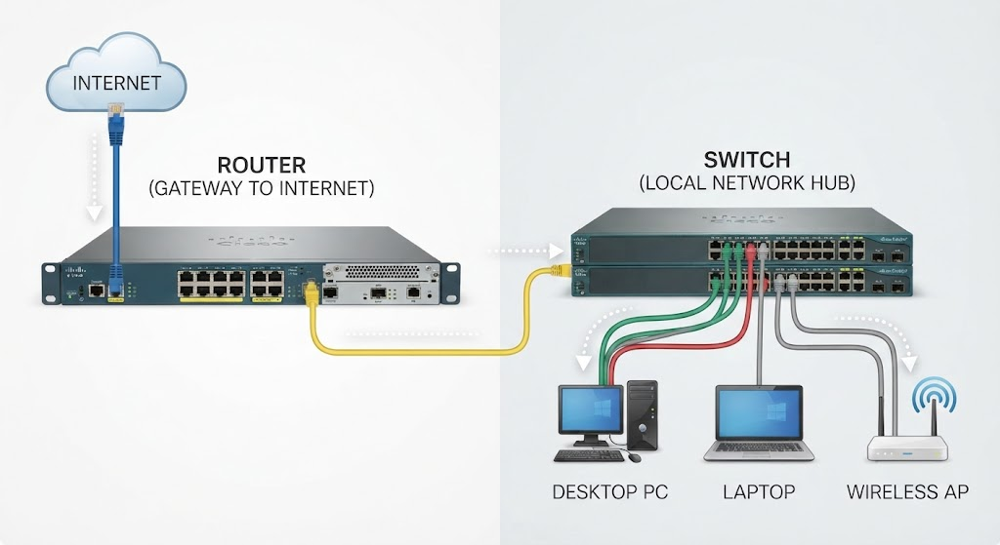
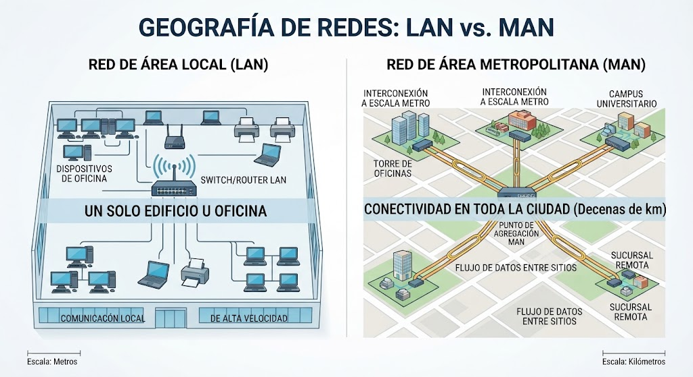
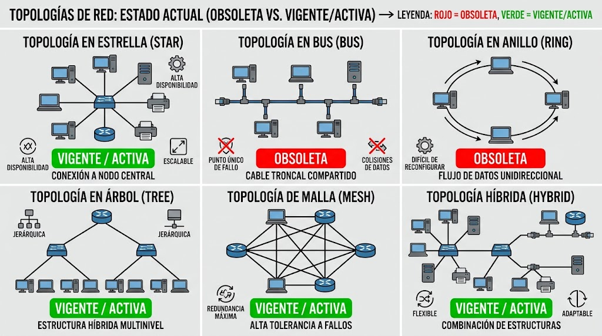
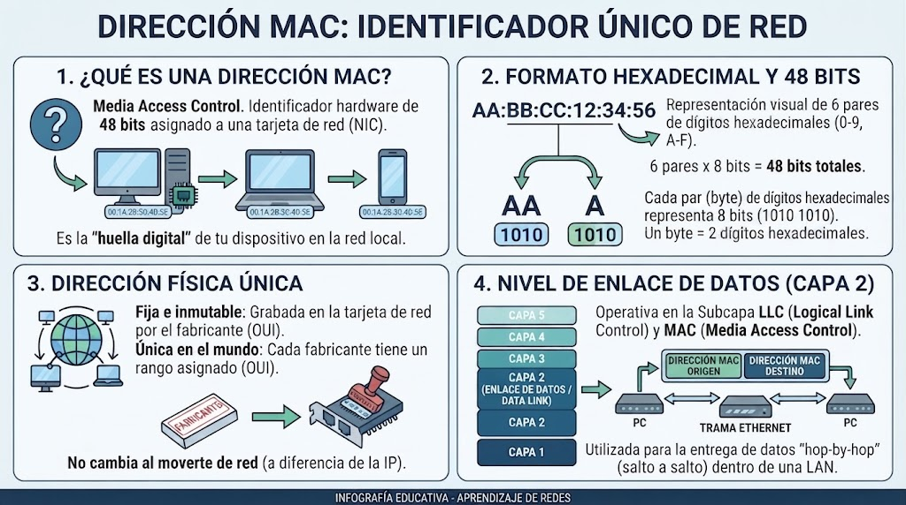
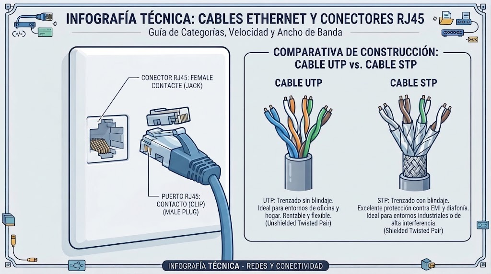
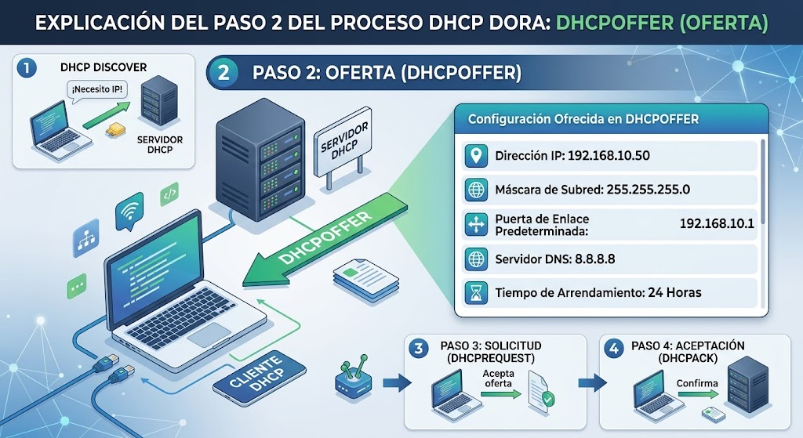
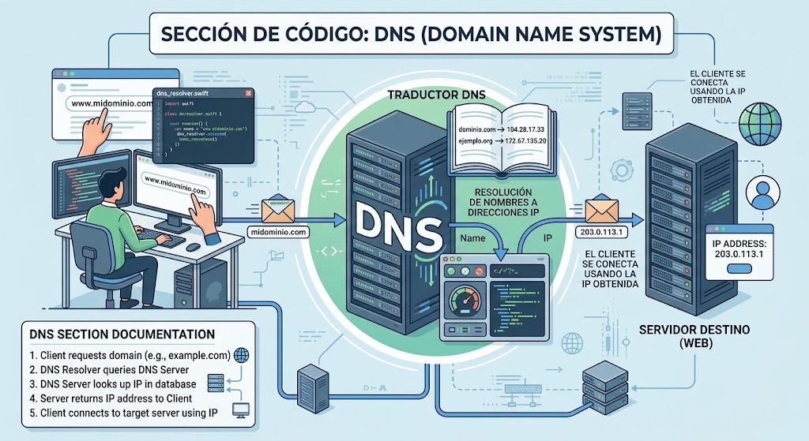
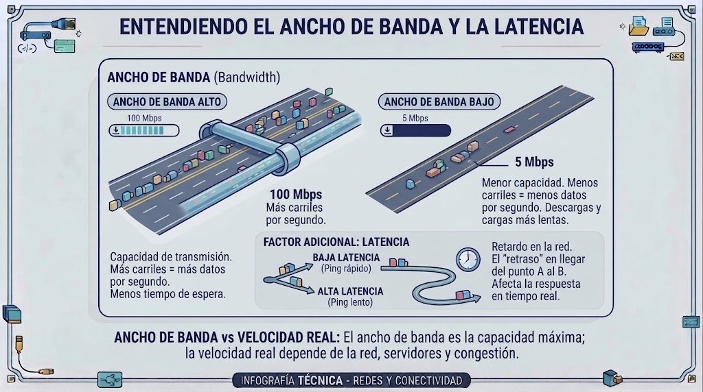
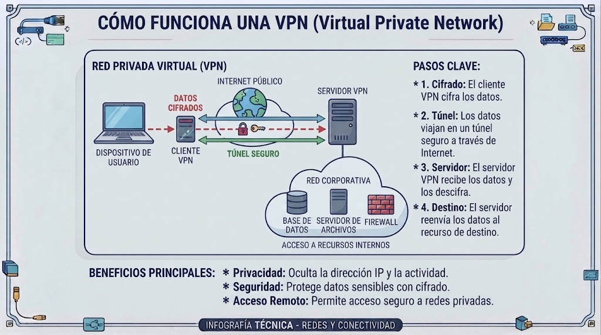

Router → Switch → dispositivos finales (nodos)

LAN ↔ Router ↔ WAN (Internet)

Define la disposición de los equipos. En las redes modernas predomina la topología en estrella: todos los nodos se conectan directamente a un switch central.
Nodo1 ──┐
Nodo2 ──┼── Switch ── Router
Nodo3 ──┘

MAC: 00:1A:2B:3C:4D:5E (6 octetos hexadecimales)

Cobre (Cat6) → 1 Gbps / 100 m | Fibra óptica → 10 Gbps / 40 km

Dirección IP: identificación lógica (Capa 3) asignada a cada dispositivo para enrutar entre redes.
32 bits divididos en 4 bloques de 8 bits (octetos) separados por puntos.
Ejemplo:
192.168.1.10
Grupo de 8 bits que representa un valor decimal entre 0 y 255
(28 = 256 combinaciones).
192.168.1.10 → octeto1=192 octeto2=168 octeto3=1 octeto4=10
El servidor DHCP asigna automáticamente dirección IP, máscara de red y gateway a los dispositivos, sin intervención manual.
Cliente → DHCP Discover → DHCP Offer → DHCP Request → DHCP Ack

Escribimos google.com en lugar de 142.250.190.46. El sistema
DNS traduce nombres de dominio a direcciones IP numéricas.
google.com → DNS → 142.250.190.46

Capacidad máxima de transferencia de datos por unidad de tiempo (Mbps / Gbps). Es el ancho de la autopista.
Tiempo que tarda un paquete en ir y volver (milisegundos, ms). Es el tiempo de respuesta.
Ancho de banda = 100 Mbps · Latencia = 12 ms

VPN → encapsula y cifra el tráfico (capa 2/3)
